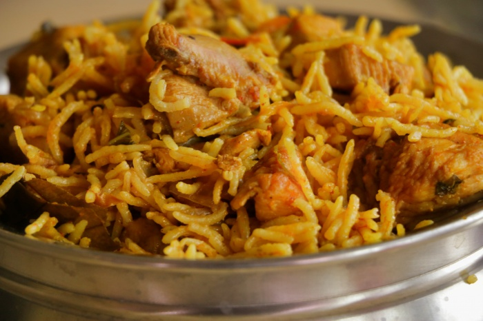

Chicken Pulao

Description
It is easy to make a perfect Chicken Pulav In Cooker. You just need to follow the precise measurements and tips.
Ingredients
- 1/2 kilo Chicken
- 250 gms Basmati Rice (1.5 cup)
- 1/4 cup Curd
- 1 Onion
- 1 Tomato
- 2 tsp Chopped Mint leaves
- 2 tsp Chopped Coriander Leaves
- 1 tsp Mirchi Powder
- Salt
- 1/2 tsp Turmeric
- 1 tbsp Ginger Garlic Paste
- 5 Cloves
- 4 Cardamoms
- 1 inch Cinnamon
- 1 Biryani leaf
- 1 tsp Black Cumin Seeds
- 1/2 tsp Garam Masala
- 1 tsp Coriander Powder
- 1 tsp Roasted Cumin Powder
- NaN/NaN cups Water
- 3 tbsps Oil
Steps
- Heat Oil in a Cooker and add Cloves, Cinnamon, Cardamoms, Black Cumin Seeds, Biryani Leaf and fry until they
give out a nice aroma.
- Add sliced onion and fry till the color changes to golden brown.
- When you get a good color, add Ginger Garlic Paste, Turmeric, Mirchi Powder, Coriander Powder, Cumin Powder and
Garam Masala and fry
- Add diced tomatoes and let them cook until soft.
- Take the Chicken soaked in saltwater for an hour, add it to the spices and fry on high flame for 4-5 minutes.
Add 2 cups of water.
- Take the soaked Basmati Rice, mix well. Add whisked Curd, Chopped Mint leaves, Chopped Green Coriander. Mix and
cook in the pressure cooker on high flame to two whistles. Then switch it off and leave it for 30 minutes.
- After 30 minutes, turn it over from the bottom with a flat spoon. There is your Perfect Chicken Pulao.